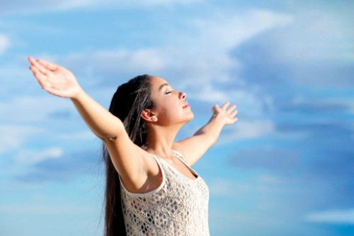
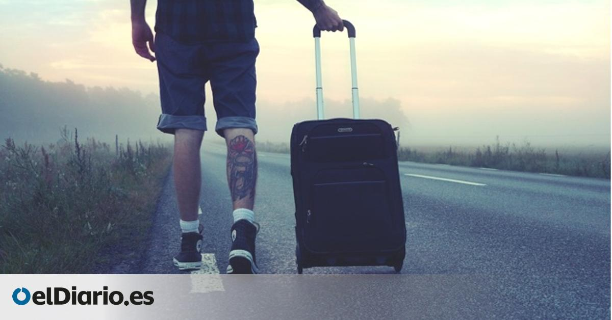
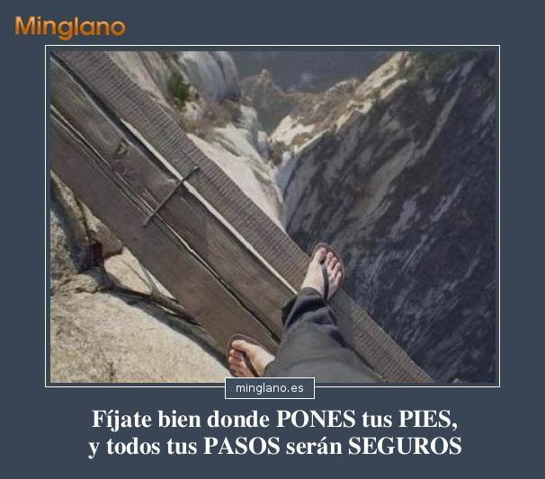
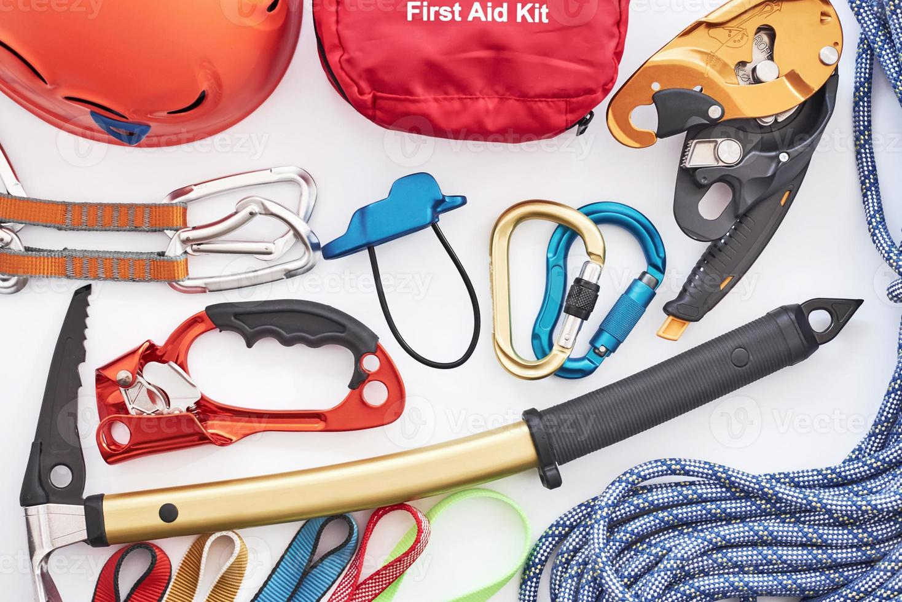

Bienvenido a Deportes Extremos
Aquí encontrarás todo lo que necesitas para practicar deportes extremos de manera segura y emocionante.
El Bungee Jumping, Alpinismo, Rápel, Parapente, Rafting, Surf, son algunos de los deportes de aventura que se practican, cuando viajas a los lugares famosos por el turismo de aventura.Si estás decidido a practicar algún deporte extremo, aquí te dejamos unos tips:
Decisión
Debes estar seguro, decidido y dominar tus miedos, no que estos te dominen a ti
Infórmate:
Planifica y entérate acerca de las medidas de seguridad, el equipo que necesitas y cómo se práctica el deporte que hayas escogido
Prepárate:
Debes tener una preparación física de acuerdo con la exigencia del deporte que hayas escogido. No improvises porque puedes afectar tu salud
No viajes solo:
Lo recomendable es tener un guía experto o que alguno de tus acompañantes lo sea. Estar solo es muy riesgoso
Sé precavido:
El deporte extremo requiere de algunas precauciones, no te expongas a riesgos innecesarios. ¡Simplemente disfruta la adrenalina, sin arriesgarte!
Clima:
Verifica antes, cómo estará el clima durante el viaje
Descansa:
La noche anterior duerme bien, ya que el cansancio va a mermar tus reflejos y estarás en peligro
Come bien:
Desayuna bien, acuérdate que vas a gastar bastante energía, lleva hidratación y después de la práctica ingiere alimentos que te ayuden a reponer fuerzas
Lleva el equipo adecuado:
Verifica que esté en perfectas condiciones. Este procedimiento es indispensable antes de iniciar cada actividad
Sigue las instrucciones al pie de la letra:
Si no te quedan claro, pregunta. En esta clase de actividades debe prevalecer tu seguridad